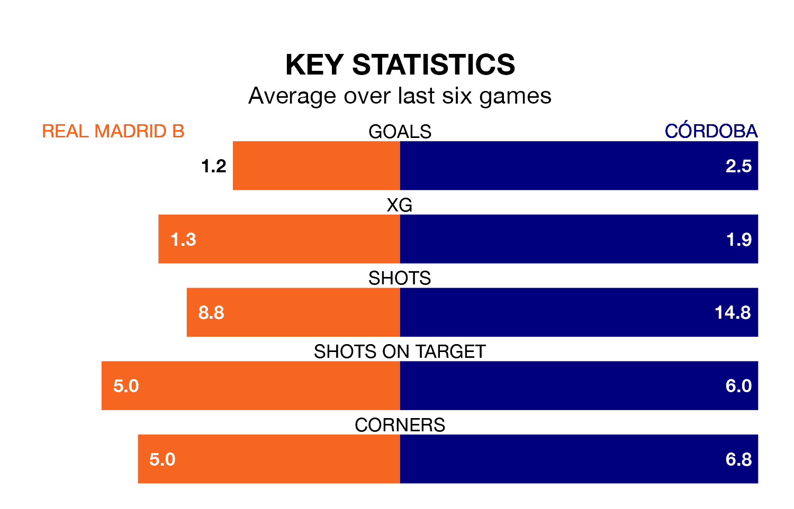

Córdoba come to the Estadio Alfredo Di Stéfano to play Real Madrid B on Sunday in excellent form, having collected 16 points from their last six games.
The visitors have won five and drawn one of their last six fixtures, while Madrid B have three wins and a draw.
With 56 goals in 30 games so far this season, Córdoba are the league's second-highest scorers with 1.9 goals per game. And they are conceding fewer than average, letting in 27 goals at a rate of 0.9 per game.
Madrid B are also above average scorers, with 1.2 goals per game, compared to a league average of 1.1. They have also conceded 1.2 goals per game.
The away side are second in the table after 30 games, of which they have won 18 and drawn seven, earning 61 points.
The hosts are 11 places behind Córdoba in 13th, with nine wins and 11 draws putting them on 38 points.
In Carlos Marín Tomás, Córdoba can rely on one of the league's safest pair of hands. He has kept 10 clean sheets in his 21 appearances this season, and only one other 'keeper – Recreativo de Huelva's Rubén Ramos González – has been able to prevent the opposition scoring on more occasions in Primera Division RFEF Group 2.
In Madrid B's net, Lucas Cañizares has six clean sheets in 17 games. He has conceded a goal every 77 minutes, 80% more often than the 135 minutes between goals for Marín Tomás.
In the last three years, Madrid B and Córdoba have played each other on three occasions. Madrid B won two of them and they drew once.
Their last meeting was on January 4, when Madrid B won 2-1 away.
Madrid B's last match was on March 31, a 1-0 win against CD Atlético Baleares.
Córdoba drew 2-2 with Mérida AD last time out, on March 30, with Adilson Mendes Martins and José Luis Zalazar Martínez on the scoresheet.
Updated: 16:41 (UTC), 04/04/24